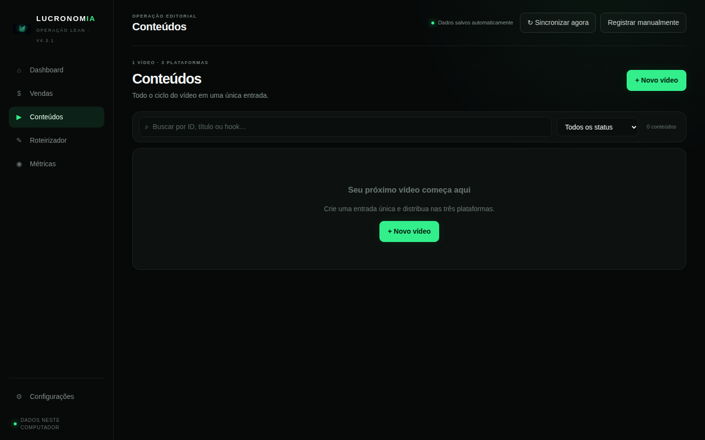
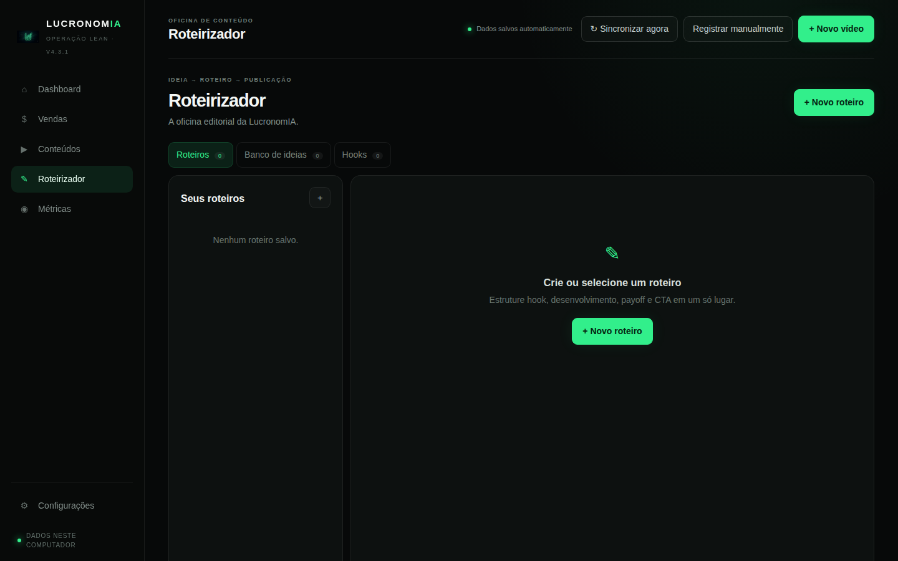

A inteligência que usamos pra decidir o que continuar fazendo.
Por trás da operação da LucronomIA existe um painel próprio que organiza conteúdo, métricas de redes sociais e, cada vez mais, dados de vendas do Confirma. Roda localmente no computador do time — hoje é ferramenta interna, mas pode virar produto no futuro.

Hoje: conteúdo e métricas. Cada vez mais: vendas.
O painel acompanha o ciclo completo de um vídeo — uma entrada, três plataformas — e está evoluindo para também mostrar a origem real das vendas do Confirma.
Como o painel é usado no dia a dia


Local-first, dados no computador do time
Onde os dados ficam
O painel é uma aplicação local: os dados de conteúdo e roteiro ficam salvos no navegador de quem opera, e as chaves de conexão com as plataformas ficam num backend local — nunca embutidas neste site público.
Conexões oficiais
YouTube, TikTok e Instagram são conectados via OAuth oficial de cada plataforma, com permissão somente leitura — o painel não publica, edita nem exclui nada nas redes conectadas.
Documentos legais
Como o painel se conecta a plataformas de terceiros, mantemos documentos públicos descrevendo exatamente o que é acessado e como excluir dados.
Outros produtos
Dúvidas sobre esta ferramenta?
Fale com a gente pelo canal oficial.